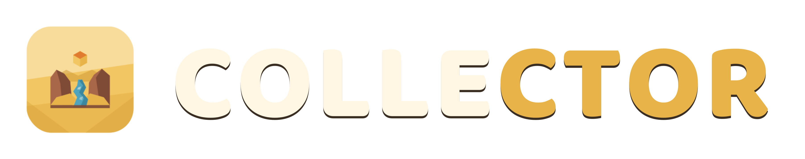

Personal project — playable below
A third-person collect-a-thon. Walk the character through a low-poly open world and gather coins, gems, and stars — each level sets a target amount of each item to collect within a time limit. Run out of time before hitting every target and the level is lost, with an option to add extra time and keep going.
// TECH STACK
// SCREENSHOTS
// PLAY IN BROWSER
Loads the WebGL build in this frame